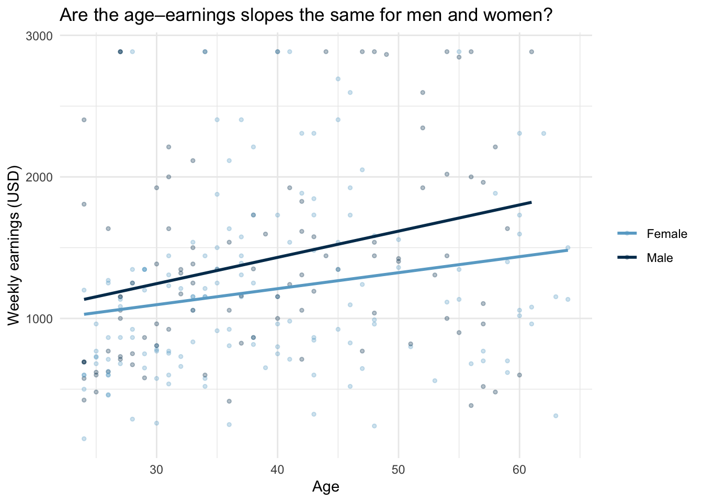

Code
library(tidyverse)
library(modelsummary)
library(flextable)Claudius Gräbner-Radkowitsch
June 16, 2026
June 16, 2026
The Linear Regression in R tutorial covered simple and multiple regression with continuous predictors. Most real datasets also contain categorical variables — gender, region, industry, educational attainment — and ignoring them means omitting potentially important predictors or misspecifying the model.
This tutorial covers two extensions:
We use a subset of the 2014 US Current Population Survey (CPS), focusing on market research analysts. The running question is: what determines weekly earnings, and does the age–earnings profile look the same for men and women?
The CPS MORG 2014 file (morg-2014-emp.csv) is from Békés & Kézdi (2021) Data Analysis for Business, Economics, and Policy. Download it from gabors-data-analysis.com and place it in a data/ subfolder next to this file.
We start with the same data preparation used in the base regression tutorial, keeping a few extra variables:
cps_raw <- read_csv("data/morg-2014-emp.csv")
cps <- cps_raw |>
filter(occ2012 == 735) |> # market research analysts only
filter(age >= 24, age <= 64) |> # working-age adults
filter(uhours >= 20) |> # at least part-time
mutate(
college = ifelse(grade92 >= 43, 1, 0), # binary college indicator
female = ifelse(sex == 2, 1, 0), # 1 = female, 0 = male
age_sq = age^2
) |>
select(earnwke, age, age_sq, uhours, college, female, grade92) |>
drop_na()The simplest categorical predictor is binary — a 0/1 indicator. Adding female to the wage model is straightforward:
| Without gender | With gender | |
|---|---|---|
| + p < 0.1, * p < 0.05, ** p < 0.01, *** p < 0.001 | ||
| (Intercept) | -2497.224*** | -2418.560*** |
| (530.026) | (534.353) | |
| age | 85.030** | 86.114*** |
| (25.737) | (25.741) | |
| age_sq | -0.830** | -0.843** |
| (0.305) | (0.305) | |
| uhours | 37.572*** | 36.316*** |
| (4.631) | (4.762) | |
| college | 313.155** | 315.911** |
| (97.216) | (97.195) | |
| female | -83.293 | |
| (74.141) | ||
| Num.Obs. | 252 | 252 |
| R2 | 0.327 | 0.330 |
| R2 Adj. | 0.316 | 0.317 |
The coefficient on female is the estimated earnings difference between female and male analysts of the same age, working the same hours, with the same education level. Read it as:
“Holding age, hours, and education constant, female market research analysts earn approximately $83 per week less than their male counterparts.”
A useful check: always look at what happens to the other coefficients when you add a new variable. If the age coefficient shifted, that is the omitted variable bias story in action — the omitted variable (female) was correlated with both age and earnings.
Before any regression, a simple group summary anchors your interpretation:
gender | n | mean_earnwke | median_earn |
|---|---|---|---|
Female | 151 | 1,199 | 1,115.38 |
Male | 101 | 1,418 | 1,307.00 |
The regression-adjusted gap will differ from this raw difference because the regression holds other predictors constant. Understanding the difference tells you which controls are doing the most work.
The binary college variable collapses all post-secondary education into one step. The CPS grade92 variable distinguishes bachelor’s degrees from graduate degrees — a richer measure.
edu_cat | n |
|---|---|
No degree | 43 |
Bachelor's | 202 |
Graduate | 7 |
When a factor variable enters a regression, R automatically drops one level — the reference category — and estimates coefficients for all others relative to it. Here, "No degree" is the reference because we placed it first in levels = c(...). Always set the reference category explicitly rather than relying on alphabetical order.
| (1) | |
|---|---|
| + p < 0.1, * p < 0.05, ** p < 0.01, *** p < 0.001 | |
| (Intercept) | -2370.647*** |
| (531.433) | |
| age | 84.683** |
| (25.585) | |
| age_sq | -0.838** |
| (0.303) | |
| uhours | 36.289*** |
| (4.731) | |
| edu_catBachelor's | 295.116** |
| (97.103) | |
| edu_catGraduate | 739.085** |
| (228.111) | |
| female | -74.917 |
| (73.778) | |
| Num.Obs. | 252 |
| R2 | 0.341 |
| R2 Adj. | 0.325 |
Each edu_cat coefficient measures earnings relative to the "No degree" group, holding all other variables constant:
edu_catBachelor's: how much more a bachelor’s-educated analyst earns compared to one with no degreeedu_catGraduate: how much more a graduate-educated analyst earns compared to one with no degreeThe difference between bachelor’s and graduate earnings is not directly in the table — calculate it from the coefficients:
Models m4 and m5 assume the age–earnings profile has the same shape for men and women — only the level differs (captured by female). This is the parallel slopes assumption. But perhaps the age slope is steeper for men: if women are more likely to take career breaks, their earnings may grow more slowly with age.
Always visualise the question before fitting an interaction:
cps |>
mutate(gender = ifelse(female == 1, "Female", "Male")) |>
ggplot(aes(x = age, y = earnwke, colour = gender)) +
geom_point(alpha = 0.3, size = 1) +
geom_smooth(method = "lm", se = FALSE) +
scale_colour_manual(values = c("Male" = "#00395B", "Female" = "#69AACD")) +
labs(
x = "Age",
y = "Weekly earnings (USD)",
colour = NULL,
title = "Are the age–earnings slopes the same for men and women?"
) +
theme_minimal()
The * operator in lm() is shorthand: age * female expands to age + female + age:female. The age:female term is the interaction.
| (1) | |
|---|---|
| + p < 0.1, * p < 0.05, ** p < 0.01, *** p < 0.001 | |
| (Intercept) | -2419.504*** |
| (538.403) | |
| age | 84.718** |
| (25.619) | |
| female | 76.860 |
| (264.996) | |
| age_sq | -0.810** |
| (0.306) | |
| uhours | 36.349*** |
| (4.738) | |
| edu_catBachelor's | 295.184** |
| (97.231) | |
| edu_catGraduate | 731.087** |
| (228.805) | |
| age × female | -3.871 |
| (6.490) | |
| Num.Obs. | 252 |
| R2 | 0.342 |
| R2 Adj. | 0.324 |
The model now contains three age-related components:
| Term | What it measures |
|---|---|
age |
age slope for men (female = 0) |
female |
earnings level gap at age = 0 (not meaningful on its own) |
age:female |
extra slope for women — how the age slope differs for women |
Group-specific slopes:
Age slope for men: 84.72 USD/week per yearAge slope for women: 80.85 USD/week per yearDifference (interaction coefficient): -3.87 Always report the group-specific slopes alongside (or instead of) the interaction coefficient itself. The interaction coefficient is only meaningful relative to the reference group; readers need the actual slopes to understand the substantive result.
coef_labels <- c(
"age" = "Age",
"age_sq" = "Age²",
"uhours" = "Weekly hours",
"college" = "College degree",
"female" = "Female",
"edu_catBachelor's" = "Bachelor's degree",
"edu_catGraduate" = "Graduate degree",
"age:female" = "Age × Female",
"(Intercept)" = "Constant"
)
modelsummary(
list(
"M3: Base" = m3,
"M4: + Gender" = m4,
"M5: + Edu cat." = m5,
"M6: Interaction"= m6
),
coef_map = coef_labels,
gof_map = c("nobs", "r.squared", "adj.r.squared"),
stars = TRUE,
notes = "CPS 2014. Market research analysts and marketing specialists (occ2012 = 735), age 24–64, usual weekly hours >= 20."
)| M3: Base | M4: + Gender | M5: + Edu cat. | M6: Interaction | |
|---|---|---|---|---|
| + p < 0.1, * p < 0.05, ** p < 0.01, *** p < 0.001 | ||||
| CPS 2014. Market research analysts and marketing specialists (occ2012 = 735), age 24–64, usual weekly hours >= 20. | ||||
| Age | 85.030** | 86.114*** | 84.683** | 84.718** |
| (25.737) | (25.741) | (25.585) | (25.619) | |
| Age² | -0.830** | -0.843** | -0.838** | -0.810** |
| (0.305) | (0.305) | (0.303) | (0.306) | |
| Weekly hours | 37.572*** | 36.316*** | 36.289*** | 36.349*** |
| (4.631) | (4.762) | (4.731) | (4.738) | |
| College degree | 313.155** | 315.911** | ||
| (97.216) | (97.195) | |||
| Female | -83.293 | -74.917 | 76.860 | |
| (74.141) | (73.778) | (264.996) | ||
| Bachelor's degree | 295.116** | 295.184** | ||
| (97.103) | (97.231) | |||
| Graduate degree | 739.085** | 731.087** | ||
| (228.111) | (228.805) | |||
| Age × Female | -3.871 | |||
| (6.490) | ||||
| Constant | -2497.224*** | -2418.560*** | -2370.647*** | -2419.504*** |
| (530.026) | (534.353) | (531.433) | (538.403) | |
| Num.Obs. | 252 | 252 | 252 | 252 |
| R2 | 0.327 | 0.330 | 0.341 | 0.342 |
| R2 Adj. | 0.316 | 0.317 | 0.325 | 0.324 |
Things to notice:
age coefficient shift when gender is added in M4? Large shifts signal that the omitted variable was correlated with both age and earnings.Age × Female statistically significant? If so, the parallel-slopes assumption of M4 and M5 is rejected by the data.Weekly earnings for market research analysts rise with age, but the increase is somewhat slower for women than for men. A female analyst earns substantially less than a comparable male analyst even after accounting for age, hours worked, and education level. Analysts with graduate degrees earn meaningfully more than those without a bachelor’s degree. That said, this analysis covers a single occupation in a single year — patterns may differ in other fields or time periods.
Standardised coefficients allow comparison of effect sizes across variables measured in different units. Use modelsummary(..., standardize = "refit") or compute them manually by dividing each coefficient by (SD of X / SD of Y). Useful when comparing the “importance” of age vs. education, but note that standardisation changes the interpretation — coefficients then reflect the effect of a one-standard-deviation change in the predictor.
Marginal effects at representative values (MER): rather than reporting the single interaction coefficient, compute the gender gap at specific ages (e.g., 30, 40, 50) using marginaleffects::avg_slopes() or predictions(). This makes the interaction interpretable for a non-technical audience.
Consolidate these skills with the exercise on predicting firm exit — that exercise uses the same regression building blocks in a different domain.
@misc{gräbner-radkowitsch2026,
author = {Gräbner-Radkowitsch, Claudius},
editor = {Gräbner-Radkowitsch, Claudius},
title = {Categorical {Variables} and {Interaction} {Terms} in
{Regression}},
date = {2026-06-16},
url = {https://euf-methodology-hub.netlify.app/resources/r-programming/multiple-regression-categorical-interactions},
langid = {en}
}
---
title: "Categorical Variables and Interaction Terms in Regression"
description: "Extend linear regression to handle categorical predictors with multiple levels and interaction terms, using a real earnings dataset to explore how the age–earnings profile differs by gender."
author: "Claudius Gräbner-Radkowitsch"
date: 2026-06-16
date-modified: 2026-06-16
image: ../../assets/images/r-programming.png
learning-objectives:
- "Add a binary variable to a multiple regression model and interpret its coefficient as a ceteris paribus group difference"
- "Recode a continuous variable into an ordered factor and interpret coefficients relative to a reference category"
- "Fit an interaction term with `*` notation and compute group-specific slopes from the output"
- "Build a publication-ready regression comparison table with renamed coefficients and fit statistics"
categories:
- R
- regression
- statistics
- BA
- MA
- tutorial
level:
- BA
- MA
content-type: tutorial
citation:
type: entry
container-title: "Methods Hub"
title: "Categorical Variables and Interaction Terms in Regression"
editor:
- name: "Claudius Gräbner-Radkowitsch"
url: https://euf-methodology-hub.netlify.app/resources/r-programming/multiple-regression-categorical-interactions
---
# Introduction
The [Linear Regression in R](linear-regression-r.qmd) tutorial covered simple and multiple regression with continuous predictors. Most real datasets also contain **categorical variables** — gender, region, industry, educational attainment — and ignoring them means omitting potentially important predictors or misspecifying the model.
This tutorial covers two extensions:
1. **Categorical predictors** — how to include a variable with two or more discrete categories and interpret the resulting coefficients
2. **Interaction terms** — how to allow the effect of one variable to vary depending on the value of another
We use a subset of the 2014 US Current Population Survey (CPS), focusing on market research analysts. The running question is: **what determines weekly earnings, and does the age–earnings profile look the same for men and women?**
## Data and packages
::: {.callout-note}
## Getting the data
The CPS MORG 2014 file (`morg-2014-emp.csv`) is from Békés & Kézdi (2021) *Data Analysis for Business, Economics, and Policy*. Download it from [gabors-data-analysis.com](https://gabors-data-analysis.com/datasets/cps-earnings) and place it in a `data/` subfolder next to this file.
:::
```{r}
#| label: setup
#| message: false
library(tidyverse)
library(modelsummary)
library(flextable)
```
We start with the same data preparation used in the base regression tutorial, keeping a few extra variables:
```{r}
#| label: data-prep
#| message: false
cps_raw <- read_csv("data/morg-2014-emp.csv")
cps <- cps_raw |>
filter(occ2012 == 735) |> # market research analysts only
filter(age >= 24, age <= 64) |> # working-age adults
filter(uhours >= 20) |> # at least part-time
mutate(
college = ifelse(grade92 >= 43, 1, 0), # binary college indicator
female = ifelse(sex == 2, 1, 0), # 1 = female, 0 = male
age_sq = age^2
) |>
select(earnwke, age, age_sq, uhours, college, female, grade92) |>
drop_na()
```
# Binary Predictors
## Adding gender to a regression
The simplest categorical predictor is binary — a 0/1 indicator. Adding `female` to the wage model is straightforward:
```{r}
#| label: model-gender
m3 <- lm(earnwke ~ age + age_sq + uhours + college, data = cps)
m4 <- lm(earnwke ~ age + age_sq + uhours + college + female, data = cps)
modelsummary(
list("Without gender" = m3, "With gender" = m4),
gof_omit = "AIC|BIC|Log|F|RMSE",
stars = TRUE
)
```
## Interpreting the binary coefficient
The coefficient on `female` is the estimated earnings difference between female and male analysts **of the same age, working the same hours, with the same education level**. Read it as:
> *"Holding age, hours, and education constant, female market research analysts earn approximately \$`r unname(round(abs(m4$coefficients["female"]), 0))` per week less than their male counterparts."*
A useful check: always look at what happens to the **other coefficients** when you add a new variable. If the age coefficient shifted, that is the omitted variable bias story in action — the omitted variable (`female`) was correlated with both age and earnings.
## Looking at the raw gap first
Before any regression, a simple group summary anchors your interpretation:
```{r}
#| label: raw-gap
cps |>
mutate(gender = ifelse(female == 1, "Female", "Male")) |>
group_by(gender) |>
summarise(
n = n(),
mean_earnwke = mean(earnwke) |> round(0),
median_earn = median(earnwke)
) |>
flextable() |>
theme_vanilla()
```
The regression-adjusted gap will differ from this raw difference because the regression holds other predictors constant. Understanding the difference tells you which controls are doing the most work.
# Categorical Variables with Multiple Levels
## Beyond binary: a three-category education variable
The binary `college` variable collapses all post-secondary education into one step. The CPS `grade92` variable distinguishes bachelor's degrees from graduate degrees — a richer measure.
```{r}
#| label: edu-recode
cps <- cps |>
mutate(
edu_cat = case_when(
grade92 < 43 ~ "No degree",
grade92 <= 44 ~ "Bachelor's",
grade92 >= 45 ~ "Graduate"
),
edu_cat = factor(edu_cat, levels = c("No degree", "Bachelor's", "Graduate"))
)
cps |>
count(edu_cat) |>
flextable() |>
theme_vanilla()
```
::: {.callout-important}
## The reference category
When a factor variable enters a regression, R automatically drops one level — the **reference category** — and estimates coefficients for all others relative to it. Here, `"No degree"` is the reference because we placed it first in `levels = c(...)`. Always set the reference category explicitly rather than relying on alphabetical order.
:::
## Fitting and interpreting the model
```{r}
#| label: model-edu
m5 <- lm(earnwke ~ age + age_sq + uhours + edu_cat + female, data = cps)
modelsummary(m5, gof_omit = "AIC|BIC|Log|F|RMSE", stars = TRUE)
```
Each `edu_cat` coefficient measures earnings relative to the `"No degree"` group, **holding all other variables constant**:
- `edu_catBachelor's`: how much more a bachelor's-educated analyst earns compared to one with no degree
- `edu_catGraduate`: how much more a graduate-educated analyst earns compared to one with no degree
The difference between bachelor's and graduate earnings is **not** directly in the table — calculate it from the coefficients:
```{r}
#| label: edu-contrast
coefs <- coef(m5)
grad_vs_ba <- coefs["edu_catGraduate"] - coefs["edu_catBachelor's"]
cat("Graduate vs. bachelor's premium:", round(grad_vs_ba, 1), "USD/week\n")
```
# Interaction Terms
## Motivation: do slopes differ across groups?
Models m4 and m5 assume the age–earnings profile has the same *shape* for men and women — only the *level* differs (captured by `female`). This is the **parallel slopes** assumption. But perhaps the age slope is steeper for men: if women are more likely to take career breaks, their earnings may grow more slowly with age.
Always visualise the question before fitting an interaction:
```{r}
#| label: fig-interaction
#| fig-cap: "Age and weekly earnings by gender, market research analysts (CPS 2014). Are the slopes parallel?"
#| message: false
cps |>
mutate(gender = ifelse(female == 1, "Female", "Male")) |>
ggplot(aes(x = age, y = earnwke, colour = gender)) +
geom_point(alpha = 0.3, size = 1) +
geom_smooth(method = "lm", se = FALSE) +
scale_colour_manual(values = c("Male" = "#00395B", "Female" = "#69AACD")) +
labs(
x = "Age",
y = "Weekly earnings (USD)",
colour = NULL,
title = "Are the age–earnings slopes the same for men and women?"
) +
theme_minimal()
```
## Fitting the interaction
The `*` operator in `lm()` is shorthand: `age * female` expands to `age + female + age:female`. The `age:female` term is the interaction.
```{r}
#| label: model-interaction
m6 <- lm(earnwke ~ age * female + age_sq + uhours + edu_cat, data = cps)
modelsummary(m6, gof_omit = "AIC|BIC|Log|F|RMSE", stars = TRUE)
```
## Interpreting the interaction coefficient
The model now contains three age-related components:
| Term | What it measures |
|---|---|
| `age` | age slope **for men** (female = 0) |
| `female` | earnings level gap at age = 0 (not meaningful on its own) |
| `age:female` | *extra* slope for women — how the age slope **differs** for women |
**Group-specific slopes:**
```{r}
#| label: marginal-effects
b <- coef(m6)
slope_men <- b["age"]
slope_women <- b["age"] + b["age:female"]
cat("Age slope for men: ", round(slope_men, 2), "USD/week per year\n")
cat("Age slope for women:", round(slope_women, 2), "USD/week per year\n")
cat("Difference (interaction coefficient):", round(b["age:female"], 2), "\n")
```
::: {.callout-important}
Always report the **group-specific slopes** alongside (or instead of) the interaction coefficient itself. The interaction coefficient is only meaningful relative to the reference group; readers need the actual slopes to understand the substantive result.
:::
# Putting It All Together
## A publication-ready comparison table
```{r}
#| label: tbl-all-models
#| tbl-cap: "Weekly earnings of market research analysts: regression results (CPS 2014)"
coef_labels <- c(
"age" = "Age",
"age_sq" = "Age²",
"uhours" = "Weekly hours",
"college" = "College degree",
"female" = "Female",
"edu_catBachelor's" = "Bachelor's degree",
"edu_catGraduate" = "Graduate degree",
"age:female" = "Age × Female",
"(Intercept)" = "Constant"
)
modelsummary(
list(
"M3: Base" = m3,
"M4: + Gender" = m4,
"M5: + Edu cat." = m5,
"M6: Interaction"= m6
),
coef_map = coef_labels,
gof_map = c("nobs", "r.squared", "adj.r.squared"),
stars = TRUE,
notes = "CPS 2014. Market research analysts and marketing specialists (occ2012 = 735), age 24–64, usual weekly hours >= 20."
)
```
**Things to notice:**
1. **R² vs. adjusted R²:** R² never decreases when you add variables. Adjusted R² penalises model complexity. Compare M4 and M5: does the finer education measure improve fit net of the added parameters?
2. **Coefficient stability:** How much does the `age` coefficient shift when gender is added in M4? Large shifts signal that the omitted variable was correlated with both age and earnings.
3. **The interaction in M6:** Is `Age × Female` statistically significant? If so, the parallel-slopes assumption of M4 and M5 is rejected by the data.
## Plain-language summary
> *Weekly earnings for market research analysts rise with age, but the increase is somewhat slower for women than for men. A female analyst earns substantially less than a comparable male analyst even after accounting for age, hours worked, and education level. Analysts with graduate degrees earn meaningfully more than those without a bachelor's degree. That said, this analysis covers a single occupation in a single year — patterns may differ in other fields or time periods.*
::: {.callout-note .level-advanced}
## 🎓 MA / PhD
**Standardised coefficients** allow comparison of effect sizes across variables measured in different units. Use `modelsummary(..., standardize = "refit")` or compute them manually by dividing each coefficient by (SD of X / SD of Y). Useful when comparing the "importance" of age vs. education, but note that standardisation changes the interpretation — coefficients then reflect the effect of a one-standard-deviation change in the predictor.
**Marginal effects at representative values (MER):** rather than reporting the single interaction coefficient, compute the gender gap at specific ages (e.g., 30, 40, 50) using `marginaleffects::avg_slopes()` or `predictions()`. This makes the interaction interpretable for a non-technical audience.
:::
# Practice
Consolidate these skills with the [exercise on predicting firm exit](exercise-logistic-regression-firm-exit.qmd) — that exercise uses the same regression building blocks in a different domain.
# Further Reading
- Bekés, G. & Kézdi, G. (2021). *Data Analysis for Business, Economics, and Policy*. Ch. 7–8. [gabors-data-analysis.com](https://gabors-data-analysis.com)
- James, G. et al. (2021). *An Introduction to Statistical Learning*. Ch. 3 (Linear regression with qualitative predictors and interactions). [statlearning.com](https://www.statlearning.com)